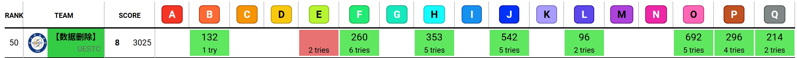

第二十四届电子科技大学 ACM‑ICPC 程序设计竞赛‑初赛游记

rank 50 ，solo 还可以喵，太久没打了，也不会评价难度，就按开题顺序水水
几乎打满 awa
09:00 开始比赛
09:50 起床
L
约10:00 看到大家都在早起做题，B、F、L 过的最多，于是决定先开L
30min 发现是个递推，然后还有逆元，找了个快速幂板子写了
10:31 交了一发 L，WA
5min 发现 0 没有逆元，补了个特判
10:36 AC，第一题就吃 20min 罚时（
B
30min 开 B，发现是个背包，去翻背包九讲了，调半天发现自己忘记输入ABC了（
11:12 过 B，感觉自己做题好慢
F
20min 看 F，发现自己不会博弈，然后判了一下异或和为 以及非零堆数为 （因为样例有个 0 2 3 ），乱写凑正解说是
11:32 交了一发，果然 WA
40min 后来又补了异或和 和 相同，然后甚至补了非零堆数为偶数的判断（因为自己造了个 1 2 3 4 5 6）的数据
11:39 11:50 又是两发 WA
Q
40min 又看到很多人做 Q ，去做 Q。感谢室友帮忙拿外卖！吃饭。Q 也是一道递推，做了半天样例一直有个点没过，怀疑是自己等比数列求和要求逆元然后模数不是质数有 bug 。改成倍增（应叫这个吧？）求等比数列和。然后过样例。
12:31 喜提 WA
3min 多加了个模（怀疑爆 long long 了）
12:34 意外地过了，然后场上人也渐渐多起来了，solo 确实不如组队，唉
F
20min 继续做 F，依然无思路，开始看 oi-wiki 的博弈论，收到一个 Moore’s Nim-k 游戏 的启发，决定考虑异或和 是否每一位都是 。写了个暴力右移同时判奇数。
12:56 WA
1min 迅速发现万一只有一个数就先手直接赢了（此时依然没有意识到自己题读错了），补了个 n==1 的特判
12:57 依然 WA
20min 终于发现 每次拿完后，如果剩下的所有石子堆的按位异或（BitwiseXOR）和是0，那么这回合拿石子的人就输了。 一直被我读成 每次拿完后，如果剩下的所有石子堆的按位异或（BitwiseXOR）和是0，那么这回合要拿石子的人就输了。
就是理解成下家了，emmm，获得新题目思路，然后就顺理成章了，只有偶数堆或者一开始就是 能赢了，进度大大落后
13:20 终于A了，又获得 100min 罚时
P
20min 然后看了看场上，开始做 P ，估了一下 的范围就开始暴力枚举，但还是没有每次都重算一遍时长
13:42 直接交，WA
8min 感觉估计范围不准还是什么然后直接改成 到 ，然后天数每次 到 算一遍
13:50 WA
3min 意识到 可能不止 换了
13:53 WA
3min 发现是正整数 ，速改成 到
13:56 AC，呃，可能就是因为初赛不计罚时所以随便交，然后最后 8 题里垫底了（话说这个 P 我赛后才知道正解是二分来着，竟然没有 T）
30min 找下一题做，发现自己每次交完题都从 70 多名到 50 多名，可能大家都是这个速度？找了 H 题，读了半天发现题干一半以上在定义 “不降子段” ，呃，然后就用链表模拟删除了，同时考虑删除后连接导致不降子段数减少，两端的数据也兼顾到了。。
14:24 WA
30min 依次又补充了一开始算不降子段数时漏的等号，链表两端端点外的指向，改了输出（甚至怀疑行末空格，但其实应该没问题），每改一次交一次，在 14:24 14:29 14:41 14:45 分别喜提四个 WA。最后才发现自己少考虑了单独成列的情况，严格单调递减就每个都是了。
14:53 AC，比赛过半
J
1h 开始考虑接下来做哪题，统计了一下剩下题当前的通过人数，考虑E，M，J。都看了看，E 看起来是道贪心，但感觉没那么简单，问了发现材料也可合成而且目标物品也可能会是自己材料的材料，感觉涉及什么拓扑排序（题解是优先队列）。M 是道交互题，昨天热身赛 B 就是交互。。。
J 是个最短路重叠问题。然后 A 也看了一眼。然后文件建好了半天没进展，于是开 J 。找了个 dijkstra 板子，记录路径，然后模拟。
16:42 交一发，不出所料 TLE（但是没有WA，虽说纯模拟也不太会有错）
1.2h 然后就是乱调 J 题，找各种优化。把 dijkstra 范围改小，改成最短路两点之间（想来确实不行，可能会绕一下松弛），然后在 16:44 WA ；换了一个堆优化的板子，又交一遍 17:06 TLE ；不信邪，又改一遍遍历范围，竟然是 TLE (17:14)。反正虽说算复杂度已经 就是爆了，但还是试图 dijkstra 卡过去。。。
最终还是翻到树上最短路可以用求 LCA ，然后也是没有了解细节就直接拿了 LCA 板子，结果是样例都没过（要是过了又是一发不明所以的 WA），后来改名白了又发现样例 ，把 memset 去掉了，交题，18:02 AC，至此算是已经过了 7 题，rank 53 。赛后知道这题其实纯暴力，然后很多人用树链剖分做？
然而 acm 群里的管理有预测 8 题线的（去年 4 题），决定还是继续比赛，室友已经准备吃饭去了。
E
1h 开始看 E ，先是写了个贪心（问过了还是试一试），交了一发 RE(18:43)，竟然是读入前 ，改了当然还是 WA (continue 吗18:52)，最终 E 也是没过
O
19:10 吃饭。
1h 发现 O 是个打表题（呃，反正就是 到 质数的子集，然后花大概 30min 打了个表，然后又花大概 30min 写了剩下的输出。
20:12 WA
20min 调 20min ，疯狂交题，又吃 3 发 WA（20:18 20:21 20:26）。然后总结下来就是要注意左端点尽量小，然后比较的时候还有左右端点，标准也要统一。
20:32 终于 AC 了，然后发现已经封榜了，也只剩不到 30min 了。看了 M 其实有思路可以二分那个环，但赛时确实没有时间了。。
12h 超长初赛。还是有很多不足吧，感觉考了很多图论的知识都不会（只知道概念不会实现），然后快速幂也只会搬板子。赛时也没有很好的发挥，一直是跟着榜在做题，有些题都没仔细思考。
应该是能进决赛吧。希望一周后线下能有更好的表现吧。